Imagem: Lookout GamesConstrução de baralho · Eurogame
Como jogar Great Western Trail: El Paso
Para quem nunca jogou1 a 4 jogadores60 a 120 min14+Edição Galápagos (Asmodee)
· Redação Elite Boardgamers
Resumo em 1 minuto
Você leva o pastor pela trilha, usa as construções para melhorar o rebanho e, a cada chegada a El Paso, entrega a mão no posto de troca mais alto que alcançar; vence quem somar mais pontos.
O pastor anda até 3 locais por turno, e só a construção onde ele para dá ações.
Vaqueiros compram gado, construtores põem construções e engenheiros usam o trem, sempre com 2 Dólares por trabalhador.
Em El Paso cada tipo de gado da mão conta uma vez; o total escolhe o posto de troca, e a partida acaba quando o Simental se esgota.
Como você aprende: 4 etapas, da mesa montada à contagem de pontosLeitura do essencial: cerca de 13 min
À vista, só o essencial para jogar. O que abre com + é explicação, exemplo, exercício ou regra de caso especial: abra quando precisar.
Montar a mesa passo a passo
Esta seção segue as duas páginas de preparação do manual: primeiro o tabuleiro p. 4, depois cada jogador p. 5, na mesma ordem e com os mesmos números de passo.
Componentes usados na partida
Peça
Quantidade
Para quê
Tabuleiro de jogo (playmat)
1
A trilha, El Paso, os postos de troca e o espaço do Simental p. 2 e 4
Ficha de El Paso
1 (marcada com A)
O local onde a trilha sempre termina p. 3 e 4
Fichas de construção neutra
6 (B a G)
Os locais que todos podem usar desde o começo p. 3 e 4
Fichas de construção comum
12 (1 a 6, lados a e b)
Construções que os jogadores compram e põem na trilha p. 3
Tabuleiro de construções e tabuleiro de gado
1 de cada
Organizam a oferta de construções e o mercado de gado p. 2 e 4
Cartas de trem
4 (1 locomotiva e 3 vagões)
Ações pagas com engenheiros p. 4 e 10
Fichas de objetivo e fichas bônus
20 de cada
O suprimento do trem p. 2 e 4
Cartas de gado
91: 40 do jogador (10 por jogador), 32 do mercado, 19 Simental
1 tabuleiro de jogador, 1 pastor, 7 discos, 2 marcadores de propriedade, 1 marcador de certificado
As peças da sua cor p. 2 e 5
Moedas e fichas de troca
55 moedas (30 de 1 Dólar e 25 de 5) e 16 fichas
O banco p. 2 e 4
Bloco de pontuação
1
A contagem final p. 2 e 14
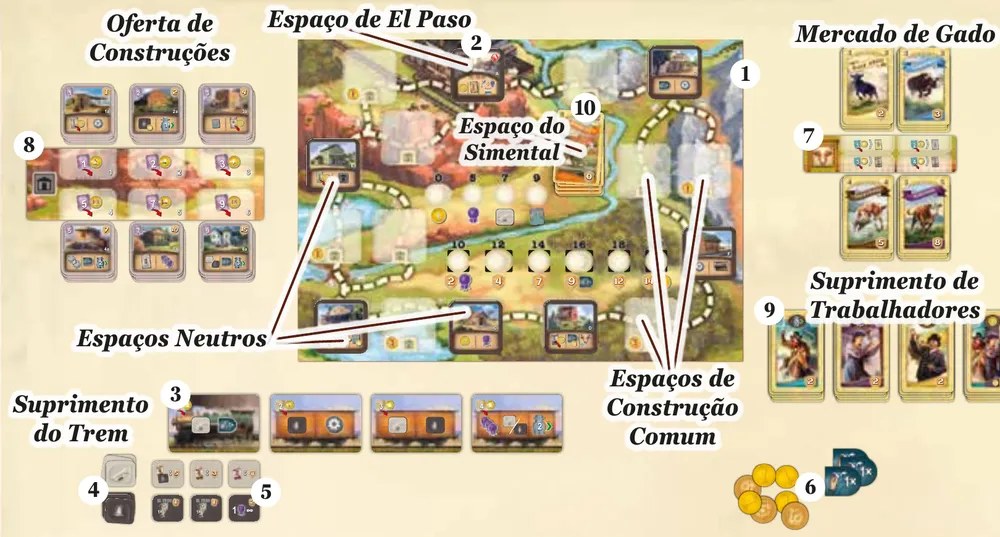
A mesa depois da preparação do tabuleiro. Os números são os passos abaixo: 1 o tabuleiro, 2 a ficha de El Paso, 3 as cartas de trem, 4 e 5 as pilhas e a oferta de fichas do trem, 6 o banco, 7 o mercado de gado, 8 a oferta de construções, 9 o suprimento de trabalhadores e 10 o Simental. Ilustração: manual Galápagos p. 4
Preparação do tabuleirop. 4
Ponha o tabuleiro de jogo no centro da mesa.
Ponha a ficha de El Paso no espaço de El Paso e as 6 fichas de construção neutra nos 6 espaços neutros. Na primeira partida, cada ficha vai no espaço da mesma letra, de B a G. Nas próximas, embaralhe as fichas e distribua ao acaso nesses espaços.
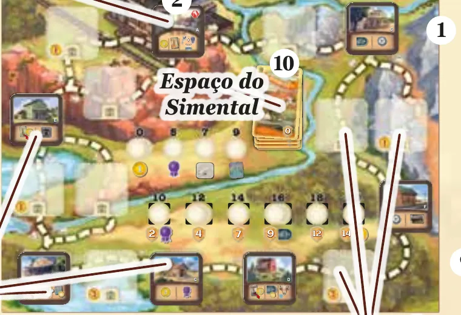
O tabuleiro com a ficha de El Paso (2), as construções neutras nos espaços neutros, as fileiras de postos de troca no meio e a pilha do Simental (10). Os espaços de construção comum começam vazios. Ilustração: manual Galápagos p. 4
Ponha as 4 cartas de trem abaixo do tabuleiro, com o lado da frente para cima, em ordem crescente de engenheiros, de 1 a 4. O outro lado, marcado com uma estrela, fica para quando o grupo conhecer o jogo.
Embaralhe as 20 fichas de objetivo e as 20 fichas bônus, cada tipo separado, e faça duas pilhas viradas para baixo perto do trem. Esse é o suprimento do trem.
Compre 3 fichas de cada pilha e deixe-as viradas para cima ao lado da pilha delas.
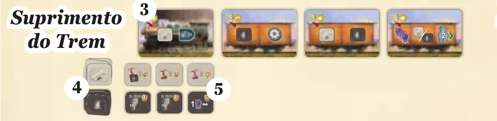
As cartas de trem em ordem (3), a pilha de objetivos e a pilha de bônus (4) e as 3 fichas abertas de cada uma (5). Ilustração: manual Galápagos p. 4
Ponha as moedas e as fichas de troca ao alcance de todos. Essa reserva é o banco.
Ponha o tabuleiro de gado perto do tabuleiro de jogo. Separe as 32 cartas do mercado de gado por raça (cor) e deixe as quatro pilhas viradas para cima em volta dele, cada uma perto do seu espaço. Cada raça fica perto do espaço que mostra o preço dela em vaqueiros: Black Angus no de 1, Corriente no de 2, Shorthorn no de 3 e Hereford no de 4 (ilustração da p. 4). As cartas de uma mesma raça são iguais; o manual diz só "escolha uma carta" no mercado, sem falar da ordem da pilha p. 10.
Ponha o tabuleiro de construções perto do tabuleiro de jogo. Vire as 12 fichas de construção comum para o lado a, separe-as pelo número de trabalhadores do canto superior esquerdo e empilhe cada par em volta do tabuleiro de construções, perto do espaço correspondente. São 12 fichas para 6 construções (1a a 6a), duas de cada, com qualquer número de jogadores p. 3 e 4. O lado b fica para quando o grupo conhecer o jogo.
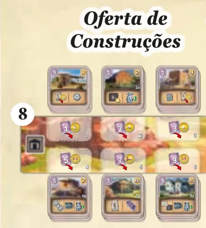
A oferta de construções (8): o tabuleiro de construções no meio, com as pilhas de construções comuns no lado a em volta. Ilustração: manual Galápagos p. 4
Separe as 48 cartas de trabalhador por tipo e deixe as quatro pilhas viradas para cima perto do tabuleiro. É o suprimento de trabalhadores.
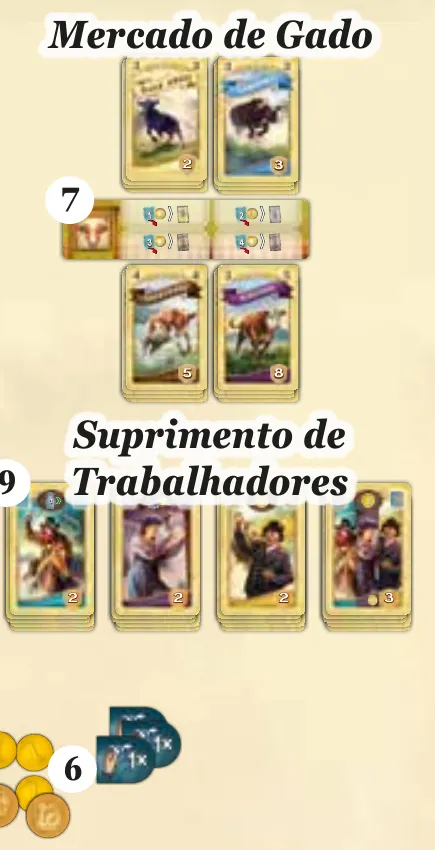
O mercado de gado (7), com as quatro raças em volta do tabuleiro de gado, o suprimento de trabalhadores (9) e o banco (6). Ilustração: manual Galápagos p. 4
Ponha cartas de gado Simental viradas para cima no espaço do Simental, conforme o número de jogadores (tabela abaixo). As que sobrarem voltam para a caixa.
Preparação do jogadorp. 5
Pegue um tabuleiro de jogador e ponha à sua frente. Embaixo dele fica a sua área dos trabalhadores: ponha ali 4 cartas de trabalhador, 1 vaqueiro, 1 construtor, 1 engenheiro e 1 trabalhador curinga. Escolha uma cor e pegue as peças dela: os 7 discos cobrem os 7 espaços de disco do tabuleiro de jogador (só os 2 símbolos de engrenagem da esquerda ficam à mostra: são as ações auxiliares de ganhar 1 Dólar e de troca, as únicas livres no começo, p. 5 e 11); os 2 marcadores de propriedade ficam ao lado; o marcador de certificado vai no espaço 0 da trilha de certificados; o pastor fica ao lado do tabuleiro de jogador, por enquanto.
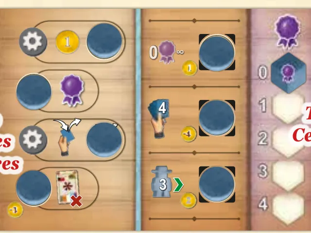
O tabuleiro de jogador montado: os 7 discos nos espaços de disco, as duas engrenagens da esquerda descobertas, o marcador de certificado no 0 da trilha de certificados, à direita. Ilustração: manual Galápagos p. 5
Pegue as 10 cartas de gado do jogador: 4 Chinampo (cinza), 2 Pineywoods (preto), 2 Galloway (branco) e 2 Santa Gertrudis (verde). Os quatro conjuntos têm as mesmas raças p. 3 e 5; as cores são das raças, não dos jogadores. Elas formam o seu baralho de rebanho. Embaralhe e ponha virado para baixo à esquerda do tabuleiro de jogador: é a sua pilha de compra pessoal. Compre 4 cartas para a mão. À direita fica o espaço da sua pilha de descarte pessoal, vazio no começo.
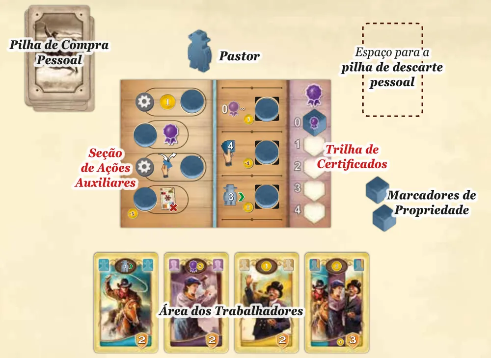
A área de cada jogador: a pilha de compra pessoal à esquerda, o pastor, o tabuleiro de jogador, o espaço da pilha de descarte à direita, os marcadores de propriedade e, embaixo, a área dos trabalhadores com um vaqueiro, um construtor, um engenheiro e um curinga. Ilustração: manual Galápagos p. 5
Escolham o jogador inicial. O manual não diz como; usem o critério que quiserem. Ele escolhe uma das fichas de objetivo abertas e repõe a vaga na hora com a ficha de cima da pilha. Os outros fazem o mesmo, em sentido horário. O manual não diz onde a ficha fica nem se fica aberta; este guia a deixa à frente do jogador, virada para cima. O manual mostra só o símbolo da ficha de objetivo neste passo.
Cada um recebe o capital inicial do banco, pela ordem de jogo (tabela abaixo). O manual não ilustra este passo.
O que muda com o número de jogadores
Jogadores
Cartas de Simental no tabuleiro
2
9
3
14
4
19
Lugar na ordem
Capital inicial
1º jogador
4 Dólares e 1 ficha de troca
2º jogador
5 Dólares e 1 ficha de troca
3º jogador
4 Dólares e 2 fichas de troca
4º jogador
5 Dólares e 2 fichas de troca
O resto da preparação é igual para 2, 3 e 4 jogadores: o manual só muda o Simental e não manda tirar trabalhadores, gado, construções nem fichas com menos jogadores p. 4 e 5. Para jogar sozinho, contra a adversária Sue, a preparação de 2 jogadores muda em alguns pontos p. 15.
O que volta para a caixa. As cartas de Simental que sobram p. 4 e as peças das cores que ninguém usa. O manual não fala das cores sem dono; guardá-las é a leitura deste guia.
Quem começa. O jogador inicial que vocês escolheram no passo 13; depois a vez passa em sentido horário p. 5 e 6.
Antes de começar, confira: El Paso e as 6 construções neutras no tabuleiro; trem em ordem de 1 a 4; 3 fichas abertas de objetivo e 3 de bônus; Simental conforme o número de jogadores; cada jogador com 7 discos no tabuleiro de jogador, certificado no 0, 4 trabalhadores embaixo, 4 cartas na mão, 6 na pilha de compra, 1 ficha de objetivo e o capital da sua posição.
Numa partida de 3 jogadores, quantas cartas de Simental vão para o tabuleiro e com quanto começa o 3º jogador?
Com 3 jogadores são 14 Simental p. 4. O 3º jogador recebe 4 Dólares e 2 fichas de troca p. 5.
Comece a jogar em 4 minutos
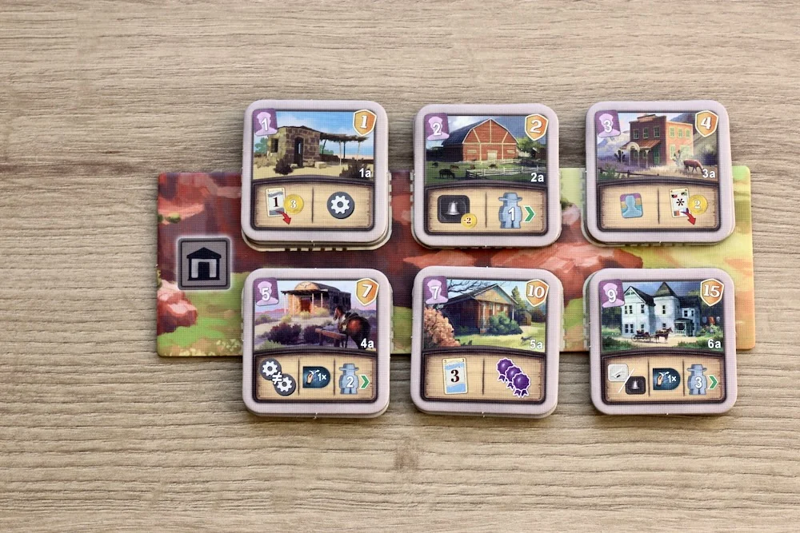
Imagem: Lookout Games
Meta: em 4 minutos de leitura, montar a mesa e jogar o seu primeiro turno sem abrir o manual.
A ideia do jogo
Cada jogador move o seu pastor por uma trilha em círculo que sempre volta a El Paso. Em cada parada, você usa as ações do local: ganha Dólares, contrata trabalhadores, compra gado, constrói. Em El Paso você revela a mão e faz a entrega: quanto mais tipos diferentes de gado, mais alto o posto de troca onde você põe um disco. No fim, vence quem tiver mais pontos de vitória p. 3, 6 e 12.
Monte a mesa
A montagem completa, com figuras, está em Montar a mesa passo a passo, no alto da página. O essencial:
El Paso e as construções neutras B a G no tabuleiro; Simental conforme o número de jogadores p. 4.
Cada jogador: 7 discos no tabuleiro de jogador, 4 trabalhadores embaixo, baralho de rebanho de 10 cartas e 4 na mão p. 5.
Uma ficha de objetivo por jogador e o capital inicial p. 5.
Seu primeiro turno
O turno tem três fases, nesta ordem p. 6 e 7:
Fase de Movimento. Só no primeiro turno da partida: ponha o pastor em qualquer construção neutra, menos El Paso. Pode ser a mesma que outro jogador escolheu p. 6.
Fase de Ação. Faça as ações da construção, cada uma no máximo uma vez, na ordem que quiser, pulando as que não quiser. Em vez delas, você pode fazer uma ação auxiliar do seu tabuleiro de jogador p. 7 e 8.
Fase de Compra. Compre da pilha de compra pessoal até ter 4 cartas na mão p. 7.
A qualquer momento do turno, você pode usar uma ficha de troca: devolva-a ao banco, compre 1 carta e descarte 1 carta da mão p. 6 e 8.
Ainda não precisa saber
Movimento normal e ações auxiliares: etapa 1. Trabalhadores, mercado de gado, trem e construções: etapa 2. Entrega em El Paso e discos: etapa 3. Fim e pontuação: etapa 4.
Como a partida acaba
Quando alguém pega o último Simental, a partida vai até o próximo pastor chegar a El Paso; depois cada um dos outros joga um último turno. Vence quem somar mais pontos p. 14.
Prefere ver? Partida resumida do canal Duque Board Games. Ele complementa este guia; em caso de diferença, vale o manual.
EL PASO - Gameplay resumida (CONFIRA A ERRATA NA DESCRIÇÃO), canal Duque Board Games · abrir no YouTube
0Antes de tudo: o que é este jogoOpcional
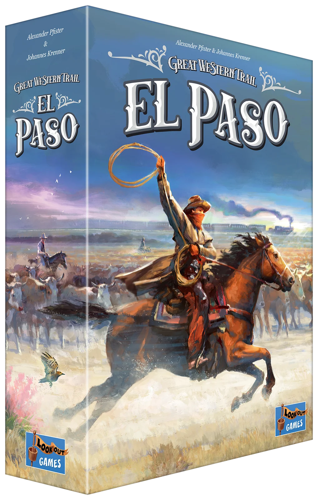
Imagem: Lookout GamesAbrir esta seção
Great Western Trail: El Paso é um jogo completo, de 1 a 4 jogadores, com caixa própria: tabuleiro, cartas, trabalhadores e construções vêm todos nela, e o manual não pede nenhum outro jogo p. 2 e 3. A Galápagos o vende no Brasil como caixa-base da família Great Western Trail, e a Lookout Games, editora original, o apresenta como uma porta de entrada para a série. Não é preciso ter o Great Western Trail para jogar.
O jogo gira em torno de um baralho pequeno, o seu rebanho. Você começa com 10 cartas de gado fraco, de 4 raças, e compra 4 delas por vez. Cada volta pela trilha termina em El Paso, onde a mão é revelada e vale pela variedade: um Chinampo, um Corriente e um Hereford valem mais que quatro Chinampo p. 5 e 12. Entre uma entrega e outra, você melhora o baralho (compra gado melhor, passa adiante o gado ruim) e junta o que precisa para isso: Dólares, trabalhadores e certificados.
Três ideias sustentam o resto:
Onde você para é a sua ação. O pastor anda até 3 locais por turno, e só o local onde ele para conta p. 6 e 7.
Trabalhadores são moeda. Vaqueiros compram gado, construtores levantam construções, engenheiros usam o trem; em cada um desses três custos, cada trabalhador gasto vem com 2 Dólares p. 10.
A entrega abre o seu tabuleiro. Cada disco que sai do tabuleiro de jogador para um posto de troca libera uma melhoria para você p. 12 e 13.
1Como este guia ensinaOpcional
Imagem: Lookout GamesAbrir esta seção
O guia segue a partida em quatro etapas: mover e usar um local; gastar trabalhadores em gado, trem e construções; chegar a El Paso e entregar; e fechar a pontuação. Cada etapa tem Para entender (como funciona), Passo a passo (a regra exata, com a página), exemplos resolvidos e tarefas: uma para completar, uma sua vez, sem ajuda, e às vezes um treino rápido. Regras que só aparecem em algumas partidas ficam em blocos de regra adicional, logo depois do passo a passo. Em cada pergunta, escolha uma opção para ver a resposta e a explicação. No fim, uma avaliação curta diz o que reler, e uma folha de consulta vai para a mesa.
2Etapa 1: mover o pastor e usar o local
Por que funciona assim
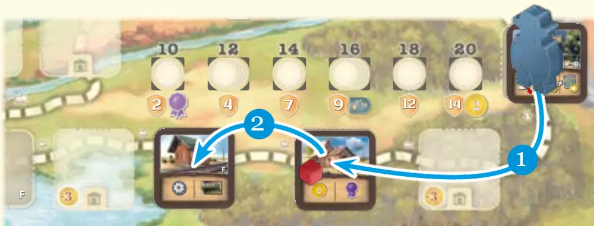
O exemplo do manual: Mary anda 2 passos. O primeiro é a construção do jogador vermelho, o segundo é o local onde ela para. Os espaços vazios da trilha não contam. Ilustração: manual Galápagos p. 6
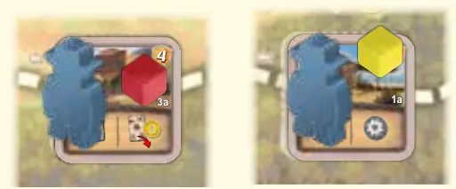
O exemplo da p. 7: o pastor azul de Mary parou em construções comuns com marcadores de outros jogadores (o vermelho na 3a, o amarelo na 1a). Ali ela só pode fazer uma ação auxiliar. Ilustração: manual Galápagos p. 7
As ações auxiliares. São quatro, na coluna da esquerda do tabuleiro de jogador (p. 11; apêndice, p. 5):
Ação auxiliar
No começo
Depois de tirar o disco
Ganhar 1 Dólar
disponível
dá 3 Dólares
Mover o marcador de certificado 1 espaço para baixo
bloqueada
disponível
Ação de troca: comprar 1 carta e descartar 1
disponível
pode ser feita 2 vezes, uma depois da outra
Remover da partida 1 carta de gado da mão
bloqueada
disponível; tirar esse disco custa 3 Dólares
O que cada construção neutra faz. As ações de cada ficha, na ordem impressa; você faz as que quiser, cada uma uma vez (apêndice, p. 3; preços da B pelo livro de regras, p. 9):
Descartar um Galloway: 2 Dólares. Contratar um trabalhador por 5 Dólares. Contratar outro, de tipo diferente, por 8. Curinga: 4 a mais em cada
C
Ganhar 2 Dólares. Descer o marcador de certificado 1 espaço
D
Descartar um Pineywoods: 2 Dólares. Pagar 1 Dólar por 1 ficha de troca. Comprar uma carta de gado no mercado (etapa 2)
E
Descartar um Santa Gertrudis: 2 Dólares. Colocar uma construção comum ou substituir uma sua (etapa 2)
F
Uma ação auxiliar. Usar o trem (etapa 2)
G
Ganhar 1 ficha de troca. Uma ação auxiliar
Regra adicional: Duas ações auxiliares diferentesRegra adicional: Mover o pastor como açãoRegra adicional: Trilha de certificados cheiaRegra adicional: Ficha de troca e trabalhadorRegra adicional: Pilha de descarte abertaVer um exemplo resolvidoDicaPratique esta etapa: exercícios com respostas
3Etapa 2: trabalhadores, gado, trem e construções
Imagem: Lookout GamesPor que funciona assim
As raças e as construções comuns. O valor de criação está no alto da carta; os pontos de vitória, no escudo de baixo (p. 3 e 12, ilustrações):
Gado
Valor de criação
Pontos de vitória
Chinampo, Pineywoods, Galloway, Santa Gertrudis (iniciais)
1, 2, 2 e 2
sem escudo
Simental
2
0
Black Angus
3
2
Corriente
3
3
Shorthorn
4
5
Hereford
5
8
Construção comum (lado a)
1a
2a
3a
4a
5a
6a
Construtores
1
2
3
5
7
9
Pontos de vitória
1
2
4
7
10
15
Os números de construtores e de pontos estão impressos nas fichas (p. 3, ilustração). O que cada uma faz, no lado a (apêndice, p. 1):
Construção
Ações
1a
Descartar um Chinampo: 3 Dólares. Uma ação auxiliar
2a
Pagar 2 Dólares por uma ficha bônus. Mover o pastor 1 passo e fazer a ação do novo local (veja a correção da Lookout abaixo)
3a
Contratar um trabalhador sem custo; curinga custa 4. Descartar qualquer carta de gado: 2 Dólares
4a
Uma ou duas ações auxiliares diferentes. Ganhar 1 ficha de troca. Mover o pastor 1 ou 2 passos e fazer a ação do novo local
5a
Pegar um Corriente do mercado, sem vaqueiros nem Dólares. Descer o marcador de certificado até 3 espaços
6a
Pegar uma ficha bônus ou de objetivo. Ganhar 1 ficha de troca. Mover o pastor 1 a 3 passos e fazer a ação do novo local
As cartas de trem, no lado da frente. Pague os engenheiros e os Dólares e faça as ações na ordem que quiser; as fichas que a carta dá não custam mais nada (p. 10; apêndice, p. 4):
Carta
Engenheiros e Dólares
Ações
1 (locomotiva)
1 e 2
Uma ficha de objetivo. 1 ficha de troca
2
2 e 4
Uma ficha bônus. Uma ação auxiliar
3
3 e 6
Uma ficha de objetivo. Uma ficha bônus
4
4 e 8
Descer o certificado até 3 espaços. Uma ficha bônus ou de objetivo. Mover o pastor 1 ou 2 passos e fazer a ação do novo local
Regra adicional: Substituir uma construção suaRegra adicional: Contratar dois trabalhadoresRegra adicional: Ganhar gado sem vaqueirosRegra adicional: Fichas de objetivo e fichas bônusRegra adicional: Remover gadoSobre a ediçãoVer um exemplo resolvidoVer um exemplo resolvidoPratique esta etapa: exercícios com respostas
4Etapa 3: chegar a El Paso e fazer a entrega
Por que funciona assim
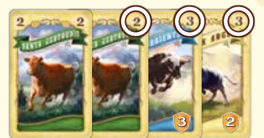
O exemplo do manual: Santa Gertrudis, Santa Gertrudis, Corriente e Black Angus. São três tipos: 2 + 3 + 3 = 8. A segunda Santa Gertrudis não soma. Ilustração: manual Galápagos p. 12
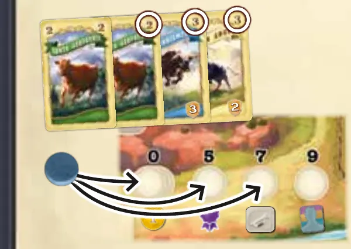
A entrega de total 8 do exemplo: o disco pode ir para os postos 0, 5 ou 7, todos com valor mínimo até 8; o 9 não. Ilustração: manual Galápagos p. 12
O que cada disco libera. Os 7 discos ficam em duas colunas do tabuleiro de jogador (p. 11 e 13; apêndice, p. 5):
Disco
Ao sair
Para onde pode ir
Ganhar 1 Dólar (esquerda)
a ação auxiliar passa a dar 3 Dólares
qualquer posto
Certificado (esquerda)
libera a ação auxiliar de certificado
qualquer posto
Troca (esquerda)
a ação auxiliar de troca pode ser feita 2 vezes
qualquer posto
Remover gado (esquerda)
libera a ação auxiliar de remover gado; custa 3 Dólares
qualquer posto
Certificado permanente (meio)
1 certificado permanente e 1 Dólar
só postos de 10 ou mais
Limite de mão (meio)
limite de mão passa de 4 para 5; custa 4 Dólares
só postos de 10 ou mais
Limite de passos (meio)
limite de passos passa de 3 para 4 e dá 2 Dólares
só postos de 10 ou mais
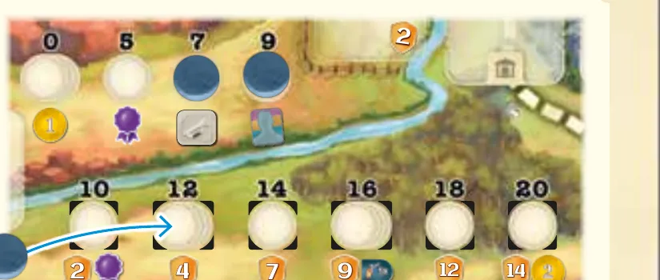
O exemplo da p. 13: com total 12 e discos já nos postos 7 e 9, Mary pode ir para 0, 5, 10 ou 12, e escolhe o 12. Embaixo dos postos de 10 para cima estão os pontos de vitória de cada um. Ilustração: manual Galápagos p. 13Regra adicional: Recompensas dos postosRegra adicional: DuplicataRegra adicional: Sem discosRegra adicional: Simental acabouVer um exemplo resolvidoDicaPratique esta etapa: exercícios com respostas
5Etapa 4: fim da partida e pontuação
Por que funciona assim
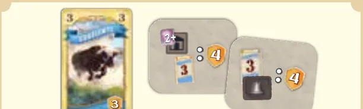
O exemplo da p. 14: com uma só carta de Corriente, só um destes dois objetivos pode ser cumprido. Ilustração: manual Galápagos p. 14Regra adicional: Construções nos objetivosSobre a ediçãoSobre a ediçãoVer um exemplo resolvidoPratique esta etapa: exercícios com respostas
6Situações especiaisOpcional
Imagem: Lookout GamesAbrir esta seçãoRegra adicional: Banco sem moedasRegra adicional: Pilhas vaziasRegra adicional: Contar o que restaRegra adicional: Fichas de troca juntasRegra adicional: Pagar pela açãoRegra adicional: Lado b e trem invertidoRegra adicional: Partida soloSobre a edição
7Avaliação finalOpcional
Imagem: Lookout GamesAbrir esta seção
Responda sem consultar. Cada resposta diz o que reler.
1. No primeiro turno da partida, onde vai o seu pastor?
Qualquer construção neutra, menos El Pasop. 6. Releia "Comece a jogar".
2. Com limite de passos 3, quantos locais o pastor pode andar se você descartar 2 vaqueiros?
Até 5, e só o local onde ele para conta p. 9. Releia a etapa 1.
3. Uma construção pede 3 construtores. Você tem 2 construtores e 1 curinga. Quanto paga?
3 trabalhadores e 6 Dólares, mais o custo do espaço, se houver p. 10. Releia a etapa 2.
4. Mão em El Paso: Shorthorn, Shorthorn, Hereford, Chinampo. Sem certificados nem fichas bônus, qual é o total?
10: Shorthorn 4 + Hereford 5 + Chinampo 1; o segundo Shorthorn não soma p. 12. Releia a etapa 3.
5. Você quer tirar o disco do limite de mão numa entrega de total 9. Pode?
Não; discos de cantos escuros pedem postos de valor 10 ou mais p. 13. Releia a etapa 3.
6. No fim, um objetivo seu está cumprido pela metade. Quanto vale?
Nada: objetivos parcialmente cumpridos não pontuam p. 14. Releia a etapa 4.
8Para consultar durante a partida
Imagem: Lookout Games
Preparação: El Paso e neutras B a G; trem 1 a 4; 3 objetivos e 3 bônus abertos; Simental 9, 14 ou 19 (2, 3 ou 4 jogadores). Cada jogador: 7 discos, certificado no 0, vaqueiro, construtor, engenheiro e curinga embaixo, 10 cartas de gado (4 na mão), 1 objetivo. Capital: 4 e 1 ficha; 5 e 1; 4 e 2; 5 e 2.
O turno
Movimento: 1 até o limite de passos (3; 4 com o disco). Só locais contam. Vaqueiro: +1 passo. Nunca atravessa El Paso. Primeiro turno: qualquer neutra, menos El Paso.
Ação: neutra ou sua: ações da ficha (cada uma uma vez) ou 1 auxiliar. Comum de outro: só 1 auxiliar. El Paso: as três ações.
Compra: até o limite de mão (4; 5 com o disco). Trabalhador comprado vai para a área dos trabalhadores.
A qualquer momento: ficha de troca (compra 1, descarta 1) e bônus de trabalhador.
Custos: 2 Dólares por trabalhador gasto. Gado: Black Angus 1, Corriente 2, Shorthorn 3, Hereford 4 vaqueiros. Trem: 1 a 4 engenheiros. Construção: os construtores da ficha, mais o custo do espaço. Curinga substitui qualquer um; contratar curinga custa 4 a mais.
Bônus de trabalhador: vaqueiro +1 passo; construtor paga 2 e desce 1 certificado; engenheiro +1 Dólar; curinga +2 Dólares.
El Paso: 5 Dólares; 1 Simental para o descarte; entrega: soma de cada tipo uma vez, mais certificados permanentes, mais os da trilha que quiser gastar. Disco num posto de valor até o total; não repete posto, menos 0, 12 e 16. Discos do meio só em 10 ou mais. Mão inteira para o descarte.
Valores de criação: Chinampo 1; Pineywoods, Galloway, Santa Gertrudis e Simental 2; Black Angus e Corriente 3; Shorthorn 4; Hereford 5.
Fim: último Simental pego; o próximo a chegar a El Paso ocupa o espaço do Simental (+2 no fim); os outros fazem um último turno.
Pontos: 1 a cada 5 Dólares; construções; discos em postos de 10 ou mais (2, 4, 7, 9, 12, 14); trabalhadores; gado (+2 no Simental); fichas bônus; objetivos cumpridos, cada item num objetivo só. Empate: mais Dólares sobrando.
Errata da Lookout: no máximo 5 cartas de gado removidas por jogador; construção 2a: ficha bônus ou mover, não as duas.
Galápagos. Great Western Trail: El Paso, apêndice (6 páginas, "GWT301_apêndice_v1.0.pdf") e errata oficial v1.0 (06/26), mesma biblioteca. Consultados em 18/11/2026.
Lookout Games. Página do jogo, com FAQ e o limite de 5 cartas de gado removidas, e o apêndice em inglês de 08/07/2025 ("2nd Edition Changes"). https://www.lookout-spiele.de/en/games/gwt_elpaso.html. Consultados em 18/11/2026.
Lookout Games. Great Western Trail: El Paso, Rules (em inglês, 16 páginas), usado só para conferir a tradução. Mesma página. Consultado em 18/11/2026.
Regras conferidas no livro de regras da edição brasileira da Galápagos (Great Western Trail: El Paso, GWT301, arquivo "regras v2.0" da biblioteca de downloads da Asmodee Brasil), no apêndice e na errata oficial da mesma edição. Dois pontos vêm da errata da Lookout Games, a editora original (o limite de cartas de gado removidas e a construção 2a), e estão marcados onde aparecem. As páginas citadas são as do livro de regras brasileiro.